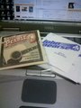

SP+の音はダークでとってもとっても気に入っているのだけども、低音弦が鳴りすぎてボトムが重く感じるようになってきた。楽器が鳴るようになったのかな？それとピック引きでうまく音がはじけない感じもする。
前回のDumlopは音色自体は特に惹かれるものはなかったが、ボトムはすっきりしていたような気がするので、また別なのに変えてみたというわけ。
これはLight Gaugeなんだけど、SP+と比べると3rd、6thだけSP+より.001細い。
ボトムはかなりすっきりした気がするが、やっぱり音色はSP+の方がいいんだよなあ。 うーん、難しい。
こんどはSP+のPhosphor Bronzeにしてみっかな。